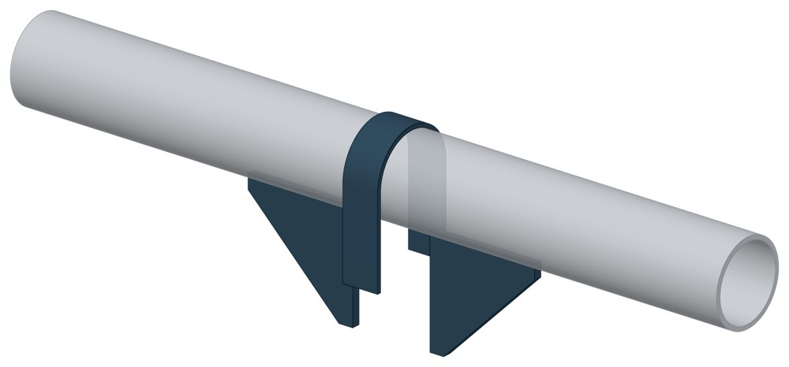
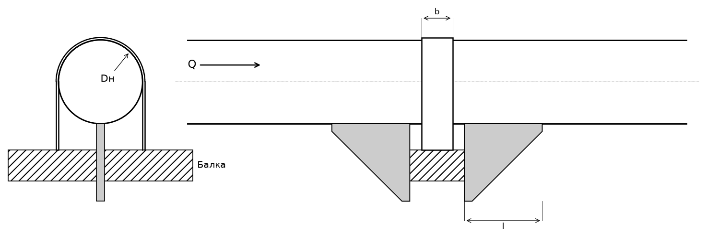

Опора неподвижная хомутовая ТС-659
Самая простая неподвижная опора для труб малого диаметра: хомут прижимает трубу к балке, два упора не дают ей сдвинуться вдоль оси.

- Диаметр трубы Dн
- 32–219 мм
- Документ
- Серия 5.903-13 вып. 7-95
- Исполнений
- 10
- Осевая Q
- до 25 кН
- Масса
- 0,3–1,5 кг
- Сталь
- Листовые детали — Ст3сп5 ГОСТ 14637-89, хомуты из круга — сталь 20 ГОСТ 1050-88. Для холодного климата — низколегированная сталь, в том числе 09Г2С; размеры опоры при этом не меняются.
- Покрытие
- По альбому серии — окраска по грунту, кроме поверхностей под сварку. Вид покрытия согласуется при заказе.
- 3D-модели
- у всех исполнений
Применение и монтаж
Назначение: где применяется
Трубопроводы тепловых сетей Dн 32–219 мм с небольшой осевой нагрузкой — от 5 до 25 кН. Опорная конструкция — балка.
Монтаж: как устанавливается
Упоры приваривают к трубе по обе стороны балки, хомут — к балке. Зазор 30 мм между трубой и балкой заполняют прокладками.
Отличия от соседних типов
Нужна высота под изоляцию — берите хомутовую с корпусом ТС-670. Осевая сила больше 25 кН — упорные опоры ТС-660, ТС-661.
Габаритная схема ТС-659

Состав комплекта на одну опору
| Хомут | 1 шт. |
| Упор | 2 шт. |
Таблица исполнений ТС-659
| Обозначение | Код ПРОМБУРГ | Dнмм | Стенка Sмм | QкН | Высота упора Lмм | Ширина хомута bмм | Массакг | 3D |
|---|---|---|---|---|---|---|---|---|
| ТС-659.00.00 | ПБ-659-0032-1 | 32 | 2 | 5 | 75 | 25 | 0,3 | 3D |
| ТС-659.00.00-01 | ПБ-659-0038-1 | 38 | 2 | 5 | 75 | 25 | 0,3 | 3D |
| ТС-659.00.00-02 | ПБ-659-0045-1 | 45 | 2,5 | 5 | 75 | 25 | 0,4 | 3D |
| ТС-659.00.00-03 | ПБ-659-0057-1 | 57 | 3 | 5 | 75 | 25 | 0,4 | 3D |
| ТС-659.00.00-04 | ПБ-659-0076-1 | 76 | 3 | 10 | 75 | 25 | 0,5 | 3D |
| ТС-659.00.00-05 | ПБ-659-0089-1 | 89 | 3 | 10 | 75 | 25 | 0,5 | 3D |
| ТС-659.00.00-06 | ПБ-659-0108-1 | 108 | 3,5 | 25 | 100 | 40 | 1,2 | 3D |
| ТС-659.00.00-07 | ПБ-659-0133-1 | 133 | 4 | 25 | 100 | 40 | 1,2 | 3D |
| ТС-659.00.00-08 | ПБ-659-0159-1 | 159 | 5 | 25 | 100 | 40 | 1,3 | 3D |
| ТС-659.00.00-09 | ПБ-659-0219-1 | 219 | 6 | 25 | 100 | 40 | 1,5 | 3D |
Чтобы заказать, сообщите обозначение и код ПРОМБУРГ: +7 (499) 325-51-35, promburg@yandex.ru.
Нормативные документы
- Серия 5.903-13 вып. 7-95 Опоры трубопроводов неподвижные. Рабочие чертежи (PDF, 127 с.) — документ, по которому изготавливается изделие
- ГОСТ 14637-89 Прокат толстолистовой из углеродистой стали обыкновенного качества — редакция, на которую ссылается альбом серии; действующую редакцию уточняйте
- В альбоме серии — ГОСТ 1050-88; действует ГОСТ 1050-2013 Металлопродукция из нелегированных конструкционных качественных и специальных сталей. Общие технические условия
Связанные позиции
- Соседний тип: ТС-669 — неподвижная хомутовая бескорпусная
- Парная подвижная опора: ТС-625 — скользящая с плоским хомутом (общий диапазон Dн 32–89)
- Парная подвижная опора: ТС-626 — скользящая хомутовая (общий диапазон Dн 108–219)
Собрать узел с этим изделием
- Конструктор узла: собрать участок с компенсатором под свои данные труба, длина, среда, условия — состав узла и спецификация бесплатно
На трубу Dн 32–219 мм в каталоге
Позиции каталога с исполнениями на те же наружные диаметры трубы.
Детали трубопровода
- Заглушка стальная эллиптическая общих Dн: 10
- Отвод стальной крутоизогнутый 90° общих Dн: 10
- Фланец стальной воротниковый общих Dн: 10
- Фланец стальной плоский приварной общих Dн: 10
- Отвод стальной крутоизогнутый 90°, 09Г2С общих Dн: 7
- Переход стальной концентрический общих Dн: 7
- Отвод нержавеющий 90° общих Dн: 1
Компенсаторы
- Компенсатор резиновый фланцевый NBR РКН общих Dн: 9
- Компенсатор резиновый фланцевый SBR РКС общих Dн: 9
- Компенсатор резиновый фланцевый PTFE РКТ общих Dн: 9
- Компенсатор резиновый фланцевый EPDM РКЭ общих Dн: 9
- Компенсатор сильфонный 2ОПКР общих Dн: 7
- Компенсатор сильфонный 2ОПКР (ИЯНШ) 2ОПКРИ общих Dн: 7
- Компенсатор сильфонный 2СКУ.М 2СКУМ общих Dн: 7
- Компенсатор сильфонный 2СКУ.М (ИЯНШ) 2СКУМИ общих Dн: 7
- Компенсатор сильфонный 2СКУ.ППМ 2СКУППМ общих Dн: 7
- Компенсатор сильфонный 2СКУ.ППМ (ИЯНШ) 2СКУППМИ общих Dн: 7
- Компенсатор сильфонный 2СКУ.ППУ 2СКУППУ общих Dн: 7
- Компенсатор сильфонный 2СКУ.ППУ (ИЯНШ) 2СКУППУИ общих Dн: 7
- Компенсатор сильфонный 2СКУ.ППУ/ОЦ (ИЯНШ) 2СКУППУОЦИ общих Dн: 7
- Компенсатор сильфонный DEK общих Dн: 7
И ещё 21 тип — в оглавлении каталога.
Другие опоры и подвески
- Опора неподвижная двухупорная ТС-660 общих Dн: 10
- Опоры неподвижные ППУ-ОЦ (ПЭ) ППУ неподвижная общих Dн: 10
- Опоры скользящие ППУ-ПЭ(ОЦ) ППУ скользящая общих Dн: 10
- Опоры бескорпусные неподвижные ОБН общих Dн: 10
- Подвески ПГ и ПМ для горизонтальных трубопроводов ПГ, ПМ общих Dн: 10
- Опора скользящая приварная ТС-623 общих Dн: 9
- Опорные плиты диэлектрические ТС-632 общих Dн: 8
- Опора неподвижная хомутовая с корпусом ТС-670 общих Dн: 7
- Опоры хомутовые подвижные 313 ТС общих Dн: 7
- Опоры хомутовые подвижные 313 ТС в футляре общих Dн: 7
И ещё 82 типа — в оглавлении каталога.
Другие типы раздела
Неподвижные опоры тепловых сетей (ТС-659…ТС-671)
- Опора неподвижная двухупорная ТС-660
- Опора неподвижная четырёхупорная ТС-661
- Опора неподвижная двухупорная усиленная ТС-663
- Опора неподвижная четырёхупорная усиленная ТС-664
- Опора неподвижная двухупорная сальниковых компенсаторов ТС-665
- Опора неподвижная щитовая ТС-666
- Опора неподвижная щитовая усиленная ТС-667
- Опора неподвижная боковая ТС-668
- Опора неподвижная хомутовая бескорпусная ТС-669
- Опора неподвижная хомутовая с корпусом ТС-670
- Опора неподвижная бугельная с корпусом ТС-671
Частые вопросы
Чем неподвижная опора отличается от подвижной?
Неподвижная закрепляет трубу в одной точке и принимает усилия от температурного расширения, давления и трения. Подвижная держит вес трубы и даёт ей перемещаться при нагреве. Неподвижные делят трассу на участки компенсации, подвижные стоят между ними. Место и тип каждой опоры задаёт проект.
Какую неподвижную опору выбрать: хомутовую, упорную, щитовую?
Выбор идёт по расчётной осевой силе и по тому, на что опора опирается. Малый диаметр и небольшая сила — хомутовая ТС-659. Нужна высота под изоляцию — хомутовая с корпусом ТС-670 или бугельная ТС-671. Труба проходит сквозь стенку — щитовая ТС-666, при большой силе усиленная ТС-667. Упор в балку или траверсу — двух- и четырёхупорные ТС-660, ТС-661, при больших нагрузках усиленные ТС-663, ТС-664.
По какому диаметру подбирать — Dн или Ду?
По наружному диаметру трубы Dн: именно он стоит в таблицах серии. Ду — условный проход, округлённая величина: Ду 100 соответствует Dн 108. В заявке указывайте Dн и толщину стенки трубы.
Какую нагрузку выдерживает опора?
Допускаемая нагрузка задана в таблице для каждого исполнения — она в первой группе колонок каждой карточки. Хомутовая ТС-659 — осевая Q от 5 до 25 кН, щитовая ТС-666 — от 50 до 3300 кН, хомутовая с корпусом ТС-670 — Q до 380 кН и боковая T до 200 кН.
Как расшифровать ТС-659.00.00-03?
ТС-659.00.00 — номер чертежа типа опоры в серии 5.903-13, здесь это неподвижная хомутовая ТС-659. Цифры после дефиса — номер исполнения по таблице: -03 — это Dн 57 мм. Для заказа достаточно полного обозначения и количества. Рядом в каждой карточке стоит короткий код ПРОМБУРГ вида ПБ-659-0057-1: тип, Dн, номер исполнения.
Неподвижную опору приваривают к строительной конструкции?
Упоры и щиты приваривают к трубе, а к несущей конструкции они прилегают свободно, без приварки — так разгружаются от крутящих моментов и опора, и конструкция. У хомутовой ТС-659 упоры приваривают к трубе, а хомут — к балке.